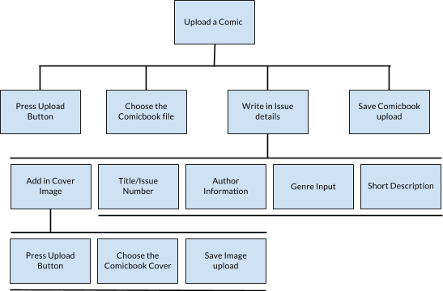
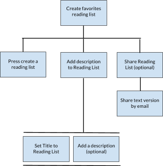

Beatrice Huang
Shirley Yue
Joana Vukatana
Project Assignment #2
Title: Comicable
-
Problem:
As much fun as reading paper comics can be, there are certain limitations to it. First and most important one is space. Because of how much space it takes to hold on to so many issues and because so many issues exist, many comic book readers are turning to electronic versions of their favorite comics. Just like how there is Kindle for books, or Calibre to manage e-books libraries, or numerous websites for magazines and newspapers, there are also some comic book sites as well. The only sites that allow users to read and upload their own comic files have a complicated and unappealing user interface. These sites don’t have the option to keep track of new releases or have a reading list to keep up with the amount of comic issues a user is currently reading. With the many comic universes and parallel timelines that exist, it is almost impossible to keep track of your issues unless you had a reference to guide you.
-
Users:
Our primary stakeholders are comic book enthusiasts. They would have to be technologically friendly because our idea is basically a webpage where users can upload their favourite comics, browse for other comic books, and create their own shareable reading lists. These kind of users will directly benefit from our project, as it will make it a better experience being passionate about comic books.
John is a 21 year old college student who has grown up with comic books his whole life. He is now at Northeastern University studying computer science and is an avid fan of Aquaman.
Our secondary stakeholders would be other comic book websites and comic book sellers. Although our project’s intention isn’t to lower their online engagement or customer buyings, it will have a slight negative impact on them. The more people start to use online services the less they'll go out and actually buy physical copies of comic book issues. Comic book stores will have the option to sell electronic version of their comics for cheaper and they pay us to host the files.
Mary age 55, is the CEO of a local comics book store chain. She has realized that more and more people have stopped coming into her store. She wants to keep her store afloat and wants to go electronic. -
Task Analysis:
1. Upload a comic book file
2. Create favorites reading list
3. Add or Remove from favorites

-
Problem Scenarios:
Scenario 1: Uploading own files
Matt is a 21 year old college student who is also an avid comic book reader. After commuting from home for the first two years of his college life he is excited to finally live on campus. However, to save on housing costs he has to share a small dorm room with two other roommates. Matt brings all his comic books to campus and realizes that he has nowhere to put them except in the dusty corner under his bed. He realizes that continuing to collect physical issues will be an issue and hopes to find a more convenient way to keep up with his favorite series.Scenario 2: Ease of use
Beth is a 12 year old middle school student who saw the Avengers movies and wants to get into the comic book scene however, she has no idea where to start. She tries to go into a bookstore but all doesn’t know where to get them. She has to find a specialty comic shop but when she’s there, the physical issues are too expensive so she wants to look for an online source. She found some files for the comics but when she tried to google around for a good app to use she comes up short. She wishes there was an foolproof way to read her comics online.Scenario 3: Creating a Favorites/Reading List
Annie is a tech-savvy, 28 year old office worker who likes to read electronic comics in her spare time. She currently stores all her files locally in Calibre, an ebook manager, but is starting to get overwhelmed by the amount of unordered files and lack of categories. She starts an Excel spreadsheet to organize everything but wishes there was a more visually appealing way to do the same task. -
Usability Requirements:
- Users will be able to upload their own comic book issues
- Users will be able to see recently released issues
- Users will be able to create a favorites list
- Users will be able to add and remove issues from a favorites list
- Users can filter through a list of comics by genre, title or author
- Users will be able to bookmark what issue they’re on
Project Assignment #1
-
Problem:
Collecting comic books is an expensive hobby that requires a lot of physical space. Due to this, many users are turning to electronic versions of their favorite comics. The problem is that comic book readers have a hard time reading and uploading their comics online. The only sites that currently have this function also has a nonintuitive user interface. Another problem is the huge volume of comic releases daily; it is almost impossible to keep up with the amount of comic issues that a user is currently reading.
-
Target Users:
Our target users are comic book enthusiasts who want an online resource to upload and read virtual copies of comic book issues. These users might have poor organizational skills so they can use this as a well designed catalogue. Other target users can also be casual readers that can appreciate good design.
-
Solution:
We will create a web application that will let you upload as many comic files as you want and read it online. You can put in a reading list and it'll let you know what issue you have read. We will also have a list of any comic book issues have recently came out. This list will allow filtering through by keywords. This is going to be written as a Javascript frontend web application and Java/Python backend.